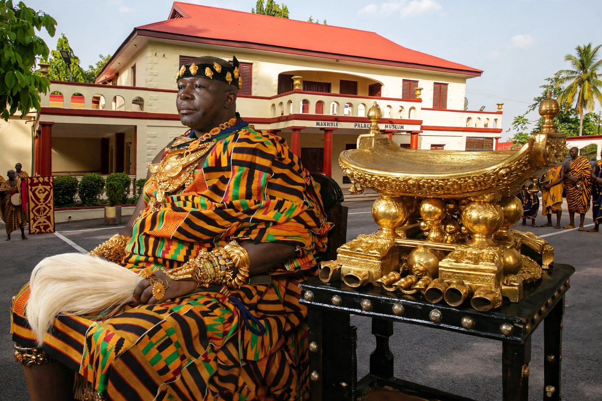

The Ashanti Empire (Asante Twi: Asanteman), also known as the Ashanti Confederacy, was a pre-colonial Akan state in what is now southern Ghana, existing from about 1701 to 1901. It grew from the union of Akan city-states around Kumasi under Osei Tutu I and his priest-adviser Okomfo Anokye.

| Capital | Kumasi |
|---|---|
| Established | c. 1701 |
| Disestablished | 1901 (annexed to Gold Coast) |
| Monarch | Asantehene |
According to tradition, the Golden Stool (Sika Dwa) descended from the sky onto Osei Tutu's knees, symbolising the soul of the Ashanti nation. Victory over Denkyira at Feyiase (1701) made Ashanti dominant in the gold and slave trades of the forest interior. Wealth came from gold, kola nuts and trade with Europeans on the coast.
Five wars with Britain (1824–1900) followed expansion to the coast. In 1874 the British burned Kumasi; in 1896 Prempeh I was exiled; the War of the Golden Stool (1900), led by Queen Mother Yaa Asantewaa, was the last major resistance. Ashanti was annexed in 1901 but the Asantehene was restored in the colonial era and the kingship continues today within Ghana.
Ashanti society was matrilineal, famed for kente cloth, goldweights, and sophisticated administration and military organisation.